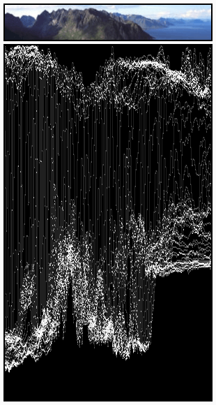

显示模式¶
有很多不同的显示模式，每一个有独特属性。
图像预览¶
图像预览显示了保存时候视频应该是什么样子。这是增加和移动他们，剪切打组（生成复合片段）和制作特效时候主要的工作模式。
亮度波形¶
选中的通道会显示明度和亮度比对图。
亮度波形能让你评估视频信号波亮度质量，你能通过观察亮度波形取代常用的导出到其他控制器显示的方式。
显示的块是每一个亮度值。线是画在每个的头上。如果线穿过（就像很多扫描线）点变亮。如果你插入示波器到电视机的视频输出亮度,你可以更容易理解。基本上是相似的。
该模式下，纵轴表示亮度：底部为0，顶部为1；横轴是该帧图像横轴的映射。显示的曲线数量与该帧扫描线一样，一条曲线对应一行扫描线所有像素点的亮度。并且，该模式下像素点的颜色表示该列亮度相同的像素点数量，亦即，通过该点的曲线数量(黑色/透明，表示对应亮度像素点，白色/不透明表示至少对应3个像素点)。
- 分离颜色
- 分离图像RGB通道。
这模式优势：
- 如果波形图没充满画布你可能需要明度对比度调节器，直到充满画面（自动调节）。
- 更多的曲线调节或者色彩平衡会让那你操作更精准。
- 如果你想整体调整，因为可以完全扭曲修剪顶部或者底部，你可以评估。

各水平线在 Luma 波形匹配图片制服颜色线。请注意 '灰色 20%' 一个像素宽度线 （里面的黄色地带） 由一个灰色的线 Luma 波形。这两条线，画"X"是从两个线性肤色深浅 （白色--黑色和黑-白->）。最后，断的线匹配复杂音调灯罩底部的图片。 |

曲线是相当明显的。我们发现天空亮度80-100%，大海亮度 40%左右,山区亮度 10-20%，阳光的部分 40%左右。 |
Note
请注意，图片（第一次绿色框架顶部）都只 50px 高，来限制 亮度波形 曲线中显示的数量
这显示用于检查适当的对比度和亮度在通道中的所有帧。当点在影片中有不这样的，它看起来像闪光灯出去或额外的光突然亮了。如果两条都呈现或在不同光照但应该是连续的条件下的拍摄就可以发生了。
色度矢量¶

示例图像。

色度矢量示例。
使用此模式直观观察颜色分布和饱和度的质量，您还可以查看一个 U/V 的散点图。
图片将转换为 YUV 格式。U 和 V 值表示颜色的角度。像素的图片，一个点绘制的显示是在U值和 V 值的位置。如果几个像素碰巧有相同 U/V 值的像素在此处变得越来越亮。
为了帮助您了解是什么颜色的意义，极端位置 （红色、 洋红色、 蓝色、 青色、 绿色、 黄色） 画了标记和红十字烙下了印记。
除此之外，选择的通道的显示还包括六边形中图片的颜色空间。六边形的每个点是一个基础颜色：红色、 洋红色、 蓝色、 青色、 绿色、 黄色。黑色在中间，所有的点饱和度都是按比例接近外面的。这示例正好显示了图片有很多红色（50%饱和度）一点点蓝没有绿。
总是要记住激活最终结果的的附加控制器。颜色校准是一种感觉取决于你的期望。
用这个显示检查很多的饱和度。过度饱和的图片在欧普艺术和电脑显示上很好在大屏幕的电视机上很糟糕。用 Alt-A 取消视频。这显示会更新每一个框架的新的/修正对比图。就像观看图片预览，去看长啥样。观察色度矢量啦看颜色的使用。
这模式优势：
- 如果图片很压抑缺饱和度，你或许会想看U/V-图。你最有可能看到所有的像素在原点堆积。如果增加饱和度，在滤色面板用 饱和度 滑块或者任何调节器改变颜色。如果你扭曲调节颜色，在U/V图你可以看到。
- 如果你手动匹配颜色，基本上能匹配你看到的不同通道显示器的角度。
直方图¶
示例图像。

直方图预览示例。
这模式显示了图像现在显示的图片中的颜色分布信息。X轴是像素值0-1（或者0-255），y轴表示调性范围内像素数量。显著显示了。深色图在图片左边有更多的信息。
用这个平衡图片调性。平衡的图应该有很好很平滑的颜色数值分布。